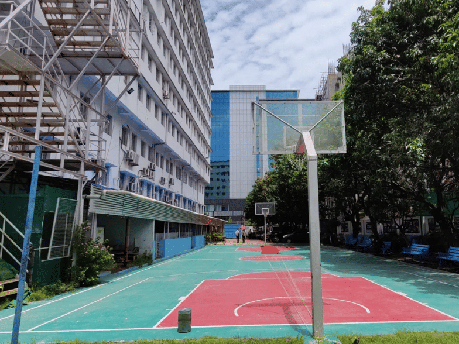
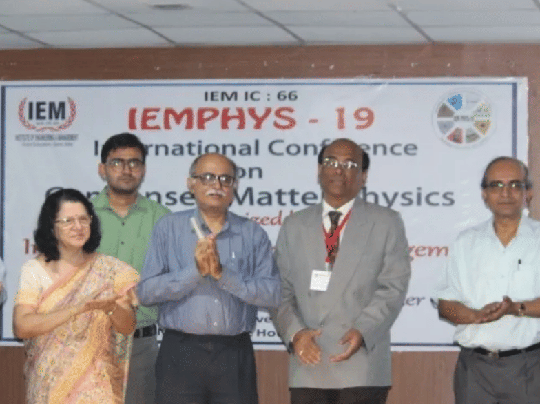

- We’re on your favourite socials!


IEM Kolkata Expert's Review and Verdict
Campus at a Glimpse
Established in 1989, IEM Kolkata is one of the oldest private institutions in West Bengal. It is considered popular and reputed due to its long-standing presence. The campus size of IEM Kolkata is just 3 acres which is relatively compact compared to other institutions of the same standard. However, it is designed well to incorporate all the necessary infrastructure such as laboratories, auditoriums, a library, canteens and a recreational area.
The IEM Kolkata course list includes undergraduate and postgraduate courses in engineering, management and computer science. BTech and MBA are the most popular courses offered here. Admission to the BTech course at IEM Kolkata is based on WBJEE and JEE Main scores. The institute follows MAKAUT guidelines and curriculum. It organises workshops, events, activities and tests on a regular basis and gives more emphasis to studies. IEM Kolkata is well-known for its discipline. Some may like it but not the majority!
IEM Kolkata boasts good rankings, awards and accolades, and nearly 100% placement offers. It was also awarded as the ‘Jewel of the East’ in the past which is a matter of pride for the institute. However, all that glitters is not gold! Students have formed a strong criticism for too much discipline and showoff done by the institute. To find out whether IEM Kolkata stands true to its name, read the article below.
IEM Kolkata Ranking: Decent!
Check out the NIRF Rankings of IEM Kolkata in the table below:
|
Year |
Category |
Rank/ Rank Band |
Score |
|
2023 |
Engineering |
151-200 |
- |
|
2022 |
201-250 |
- |
|
|
2021 |
Engineering |
169 |
34.09 |
|
Overall |
151- 200 |
IEM Kolkata Rankings by other agencies
- IEM Kolkata's ranking by NIRF Innovation in the ‘Overall’ category is 151 out of 312 colleges in India in 2023.
- IEM Kolkata B.Tech ranking by The Times of India is 7 out of 170 engineering colleges in India in 2023 and it was 10 out of 200 in 2022.
- IEM B.Tech ranking by Outlook is 40 out of 160 colleges in India in 2023 and it was 45 out of 100 colleges in 2021.
- IEM Kolkata's ranking in the B.Tech category by India Today is 53 out of 246 engineering colleges in India in 2023 and it was 61 out of 238 colleges in 2022.
- IEM Kolkata B.Tech ranking by The Week is 100 out of 131 engineering colleges in India in 2023 and it was 100 out of 216 in 2022.
- IEM’s ranking by The Times of India in the ‘Overall’ category was 20 out of 80 colleges in India in 2021.
Our Take:
IEM Kolkata was ranked among the top 200 colleges in India in 2021 under the ‘Overall’ and ‘Engineering’ categories. Despite dropping several positions in the engineering category in 2022, the institute was again ranked in the top 200 colleges in India in 2023 (engineering category). Other major ranking agencies have also ranked IEM Kolkata among the top engineering colleges in India over the years. This recognition reflects the consistent performance of IEM in the engineering domain. However, there is room for improvement in the context of the institution’s overall performance.
IEM Kolkata Academia & Batch Size
The curriculum of IEM Kolkata is a blend of theory and practical education. Students are mostly busy doing projects and assignments or taking tests. The college follows strict rules regarding attendance and punctuality to foster discipline in students. Based on students' reviews on Quora, the institute forces them to participate in irrelevant workshops and events in the name of placements. A few criticised the industrial training and marathons as a way of minting money out of students.
IEM Kolkata Batch size
|
No. of students enrolled in 2022 |
Number of full-time teachers |
|
5,052 |
309 |
Our Take:
Appearances can be deceiving! While following an all-around curriculum is appreciable, forcing students and using the wrong tactics to earn money is unethical. Some students claimed that many co-curricular activities are just for showoff and don’t have any relevance in their development.
The institute should focus on organising activities which are useful to students in the long run. Genuine education should be prioritised and students should not be misled in the name of placements. It is crucial to create a healthy and student-friendly abode rather than forced discipline and a suffocating environment.
IEM Kolkata Infrastructure
IEM Kolkata has a small campus with just three buildings. The Gurukul building is for the engineering department and there are 2 more buildings for MBA and other courses.
- Classroom: Classrooms at IEM Kolkata are air-conditioned and spacious. They are also IT-enabled, as per the students.
- Auditorium/ Seminar Halls/ Labs: IEM Kolkata has a multi-media conference hall and labs for different departments. However, a shortage of lab equipment has been encountered by the students.
- Library: The campus has a library which is open 24x7 with a seating facility.
- Internet: IEM Kolkata claims to provide 1 GBPS internet speed. The campus has free Wi-Fi connectivity with high-speed internet as per the needs of the students.
- Commute: The IEM Kolkata campus is small, covering an area of just 3 acres. Commuting within the campus is easy.
- Hostel: IEM Kolkata offers separate hostel facilities for boys and girls. There are about 4-5 hostels which are actually PGs that the institute has levied on a contract basis as per the total students. The institute hasn’t disclosed any other information regarding the hostel and mess except fees. The IEM hostel fee is paid in a lump sum at the time of admission. As per student reviews, the hostels are nice but the food is average. They stated it is better to rent a PG outside which is much cheaper than the hostel.
|
Hostel |
Annual Fees |
|
Girl’s/ Boys Hostel |
INR 1 Lakh |
- Sports Facilities: The sports area of IEM Kolkata is rather small, only a basketball court and a badminton playing area are available as per the students.

- Activities: According to student reviews, IEM Kolkata conducts various co-curricular activities throughout the year. Various conferences, events, seminars, lectures, sports and cultural activities are organised on the campus. Several clubs such as drama, dance and coding are formed. Students need to give an interview to be a member of the clubs.

- Cafe/ Hang-out: There are two canteens at IEM Kolkata and one is air-conditioned. Students can’t bunk classes and enjoy themselves there! While the prices of the food are low, the quality is also compromised. Students reported that the canteen atmosphere is rather boring. A cafe coffee day outlet is also located inside the campus as per students. Various hangout places are located nearby.
|
Cafes/ Restaurants |
Hangout Areas |
|
OMG Cafe |
Nalban Park |
|
Chaiolic Cafe |
Nature and Aquatic Park |
|
Five Mad Men |
Salt Lake viewpoint |
Our Take:
Due to its small campus, the infrastructure of IEM Kolkata is rather limited. The lack of recreational areas and spacious laboratories is clearly visible. The institute has tried its best to cover the shortcomings by providing high-speed internet access, modern classrooms, a 24X7 library facility and regular conduction of activities but expanding the campus is a necessity. Furthermore, the hostel fee is rather high compared to other PGs and the mess food is below average as per the students.
IEM Kolkata Internships and Placements
IEM Kolkata Internships:
IEM Kolkata includes a 1 to 2-month compulsory internship programme in its curriculum. The question is whether it invites companies to recruit interns on its campus. Well, the answer is no. As per student reviews on Quora, students have to find internships independently without depending on the college. Hardly any help is provided by the institute’s side.
IEM Kolkata Placement:
Any job is better than no job! This is the mindset of the majority of Indian graduates. They fall into this trap and are satisfied with whatever they are getting even after paying heavy fees in college.
As per the students' review, the average placement package at IEM Kolkata is 4-5 LPA for most courses. Let’s have a look at the highlights of IEM Kolkata placements based on NIRF 2023 data for in-depth analysis.
Overall:
|
Programme |
No. of Students graduated |
No. Students Placed |
Median Salary |
|
UG (4-year) |
841 |
706 (83%) |
INR 4.50 L |
|
PG (2-year) |
293 |
238 (81%) |
INR 6 L |
Engineering: B.Tech
|
Total Intake |
No. of Students graduated |
No. Students Placed |
Median Salary |
|
3076 |
841 |
706 (83%) |
INR 4.50 L |
Engineering: M.Tech
|
Total Intake |
No. of Students graduated |
No. Students Placed |
Median Salary |
|
86 |
40 |
15 (37.5%) |
INR 4 L |
Management: MBA
|
Total Intake |
No. of Students graduated |
No. Students Placed |
Median Salary |
|
548 |
253 |
233 (92%) |
INR 13 L |
Top Recruiters
Adobe, EQ Technologies, Capgemini, Infosys, TCS, Accenture, PWC, Wipro, Cognizant, Oracle, etc.
Our Take:
IEM Kolkata boasts nearly 100% placement in all the courses. Looking at the overall data, more than 80% of UG and PG students have been placed in 2022 which is not bad! More than 90% of students of MBA and 80% of students of BTech have been placed but the placement percentage for MTech is meagre.
While the median salary for the MBA programme is considerable, the BTech median salary of INR 4-5 LPA is quite average. Furthermore, around 60% to 80% of students are hired by mass recruiters such as TCS and Infosys. Students have also reported that it is mainly the CSE students who get the highest salaries.
IEM Kolkata Diversity & Demographics
Check out the NIRF 2023 data submitted by the university for the academic year 2022 to know more about diversity and demographics at IEM Kolkata.
Male vs Female Students
|
Programmes |
No. of Male Students |
No. of Female Students |
|
UG (4-year) |
1974 (64%) |
1102 (36%) |
|
PG (2-year) |
334 (52%) |
300 (48%) |
Students Within State vs Outside State
|
Programmes |
No. of Students Within State |
No. of Students Outside State |
|
UG (4-year) |
1243 (40%) |
1782 (57%) |
|
PG (2-year) |
563 (88%) |
71 (11%) |
Indian vs Foreign Students
|
Programmes |
No. of Indian Students |
No. of Foreign Students |
|
UG (4-year) |
3025 (98%) |
51 (2%) |
|
PG (2-year) |
634 (100%) |
0 |
Our Take:
The male-to-female ratio in UG courses shows fewer women are interested or eligible for admission. In UG courses, there are more students from other states, however, only 11% of students from outside the state are enrolled in PG courses. BTech is more popular outside the state than other courses offered by IEM Kolkata. Only 51 foreign students enrolled in UG courses representing lesser global diversity at the institute. IEM Kolkata needs to attract more female students and increase its cultural diversity by offering more courses.IEM Kolkata Faculty/ College Administration & Management
According to the official website, the total number of faculty at IEM Kolkata is 310 for 5,052 students. The teacher-to-student ratio is 1:16, which is really good! As per NIRF 2023 data, there are more faculty members with postgraduate degrees than PhD holders. The students have mixed reviews for the teachers at IEM. As per them, a few dedicated faculty help students and push them to do their best. However, many of them are inexperienced and uncooperative. Students have also shared issues related to the boastful administration and unsupportive management of the institute.
Let’s see some major issues of students related to faculty and management.
- The policy of not allowing students to enter the classroom even if they are five minutes late.
- Very strict attendance policy! Parents are informed if a student is absent for more than two days.
- The director has been found boasting about the institute’s excellence without reason.
- Forced discipline!
Our Take:
The environment of IEM Kolkata is rather serious and like a school. More focus on attendance, discipline and exams is given here. A studious candidate might be able to adjust to this environment but it is not possible for everyone. The institute shall lay focus on providing its students with a holistic approach that can cater to the academic, extracurricular and fun elements vital for their overall growth and success. Sincerity and discipline help students in the long run but leniency in some areas can be done to foster creativity and individuality in students.
IEM Kolkata Location
Situated within the heart of Kolkata’s IT hub, IEM Kolkata enjoys a prime location at Sector – V, Saltlake Electronics Complex, Kolkata, West Bengal, India. The vicinity is surrounded by residential areas, social and retail infrastructure and employment hubs. It is well-connected with road, rail and airways.
IEM Kolkata: Expectation vs Reality CLD Verdict!
Well, the shine of the jewel has dimmed! IEM Kolkata was indeed considered reputed but compromised education quality and showoff have overshadowed its former glory. However, a focused student can still get the best out of this college. The fee structure of IEM Kolkata ranges between Rs 1 L to 3.2 L. B.Tech students are charged INR 75K to 99K per semester, which is a huge amount. While the 80% placement rate is considerable, the average placement package of INR 4-5 LPA does not align with the ROI.
Final Checklist!
|
Yay |
Nay |
|
Considerable ranking in Engineering |
Excessive discipline |
|
Balanced student-to-teacher ratio |
Strict attendance policy |
|
Air-conditioned and IT-enabled campus |
Limited recreational area and lab equipment |
|
Good placement rate |
Average hostel and food facility |
|
Prime location |
Lower median salary for BTech students |
|
All-round curriculum |
Lack of global diversity |
|
Male to female ratio in PG courses |
Heavy fees |
What students says about IEM Kolkata
- Many MNCs have visited our college and made quite decent offers like TCS, CTS, INFOSYS, CAPGEMINI, ORACLE, IBM, DELOITTE, ACCENTURE and many more.
- The admission process was done in three days and was done in a haphazard situation.
- There are no reservation benefits from the college in terms of caste.
- Students can also get admission using the process of management quota where one has to pay excess donations to receive admission to the college.
- The support from the faculty was outstanding. Our college has a good reputation for placement and its high discipline. We experience the best infrastructure and support from the teachers.
Note: Insights gathered through various sources across internet like student reviews, ratings, student testimonials etc
IEM Kolkata Reviews and Rating
Why to choose IEM Kolkata?

4.4
(74 Verified Reviews)
Share your college experience
Earn unlimited cash rewards  Earn up to ₹10 for every approved college review. Refer your friends to write reviews and earn ₹10 for each of their approved reviews too.
Earn up to ₹10 for every approved college review. Refer your friends to write reviews and earn ₹10 for each of their approved reviews too.

Student Feedback and Rating on IEM Kolkata
Enrollment : 2024 | Mar 13, 2025
Brief Review about the college
Overall Talking about a neutral point perspective . I will give the college 3.5 to 4 on 5 . Firstly talking about the positive points : 1)It provides students with great opportunities like providing free courses. 2)Provides Study Abroad Program for interested students. 3)Organises a lot of fests including cultural , technical with a lot of events for every student to take part. 4)Has great societies which provides facilities and organises a lot of events . 5)The professors as well as seniors are very helpful and friendly . 6)Also it has very good placement overall. Now talking about the negatives : 1)The pressure here is too much , starting from academic to different projects and assignments . 2)The atmosphere is very strict here and demands proper attendance,perect reporting and following of timings. 3)The campus is too small for a college . Overally , it provides a lot of courses with a lot of branches,and opportunities to explore .
Placement Talking about the placement , this college has always been known for its placements and stands one of the best in engineering colleges for its placement purposes .Almost all the students here gets placed , as can be seen on the official data .Where in most of students generally get more than one job offers from recruiters which mostly include TCS , capegemini , Oracle , etc.
Infrastructure Talking about infrastructure . It has a lot of labs equipped with good number of equipments for performing experiments . Has library and study facility.The faculties here are good and helpful , also placements classes are organized on a regular basis ,Every classes are quipped with projectors for presentation purposes The campus is also clean overall . Talking about you can also get other facilities like a cafe , canteen , vending machines . There are also good infrastructures for students and a lot of events .
Faculty Faculties are very friendly and will always help you whenever needed . Also there are a lot of placement guide classes and specific subjects , the professors are always punctual to the classes and almost they take their classes everyday , which is something really appreciable and not there in many colleges .
Hostel Though Personally I have never been to IEM hostel but they are well maintained and clean .But are way too strict , like the gate closes after 7 pm at evening , if someone wants to stay at hostel during the college hours ,he/she must have to take permission from the college and then will be allowed to stay at hostel and a plenty other rules like you have to be in your room after 8pm and so.
Enrollment : 2022 | Aug 29, 2024
Placements of the college
Placement The campus welcomes a lot of companies in the college but their tests and interview schedules have very less proper timings and this drains out the students.
Faculty Faculty members are well qualified, trained, and knowledgeable, and they provide the best quality of education to the studets. They all are very friendly with students.
Hostel 2 students will be accommodated in each room which enough spacious. One cot, study table and chair will be provided. Each room has a fan,2 cupboards,2 tubelights. The food provided in the hostel mess is mostly edible.
Enrollment : 2025 | Aug 06, 2024
Scholarship
Overall Gratitude overflowing: A heartful Thank You to my college Institute Of Engineering and Management for the scholarship. I wanted to take a moment to express my deepest gratitude to my college for the scholarship I received.Its not just about the financial assistance, although that has been immensely helpful in pursuing my education.Its about the belief and support that this scholarship represents. I am truly fortunate to be part of a college that not only focusesbon academic excellence but also understands the importance of supporting students in achieving their dreams. This is scholarship has made a significant impact on my life and I will always carry the gratitude and lessons learnt forward. I am really grateful to our director Satyajit Chakrabarti Sir and specially Dr. Sanghamitra Poddar Ma'am for understanding my situation and providing this scholarship. Thank You Once again a very special thanks to Dr. Sanghamitra Poddar Ma'am and Institute Of Engineering and Management . #iem #iemuem #scholarship
Enrollment : 2019 | Jul 27, 2024
My University's Faculties
Faculty The teachers are helpful, qualified, and knowledgeable; their teaching quality is good, they are experienced teachers. The faculty members have excellent knowledge of their field.
Hostel Hostels have a separate mess. Food quality is average. Hospital is nearby for any emergency.The hostel infrastructure is quite. I was a hosteller from last two years
Enrollment : 2020 | Jul 27, 2024
Our college is amazing with good placements
Overall College provide all the amenties like gymnasium, boys' and girls' hostels, laboratories, a sports complex, transportation services, banking services, a full-fledged library, a canteen and other amenities are available to students. Embarking on a journey of academic excellence, our institution takes pride in achieving an outstanding placement rate.
Placement Almost 98-95% of students got placed in this course. op recruiting company is Lenskart. Around 95-99% of students got internships at Lenskart, Era Hospital, and other hospitals.
Hostel hostel is good but expensive! electronics not allowed inside gate closes at 9-9.30 no outing after that boys and grls hostel are separate. food not included in hostel fee. wardens are friendly, sometimes rude
Enrollment : 2022 | Jul 27, 2024
It has a good infrastructure along with a good education
Overall This modern approach of teaching allows for interactive and engaging classes. The college has implemented digital teaching technology, which enhances the learning experience for students. This college is very big and beautiful. The faculties of this college are awesome. The food of canteen is good. The security system of this college is also good.
Placement All the students of our course are placed this year. Our course made history in this college by getting 100% placements, and all the students got placed in well-reputed companies with good salary packages.
Hostel Hostel facility is quite nice. Here one room is shared by two people which is nice and the area of room is quite decent and the message food is okayish and the staff of hostel is also nice and cooperative.
Enrollment : 2020 | Jul 27, 2024
Good to study here
Overall College Provide all the basic amenties which each and every studens required for good study. campus are green and clean. Students have the chance to learn under the expert guidance of leading academics. A lot of students can pursue there degree and diploma in an decent amount of fees from this college. this college is best suited for middle class students.
Placement Above 75% of students got placed in our college. op recruiting companies are HCL, Deloitte, etc. Students who get above 75% are eligible for internships. Internships depend on students' interests
Infrastructure Wi-Fi, laboratories, big classrooms with projectors in each class, libraries, etc. are there. The quality of food is amazing in our college canteen. We have good ground. And we play badminton, cricket and various other games
Faculty The teaching method of the faculty is very good to understand and the qualification of the faculties is above phd. They all have many years experienced in their subjects
Enrollment : 2021 | Jul 27, 2024
Best environemets for the study
Overall Students have the chance to learn under the expert guidance of leading academics, and by studying at a research-university they learn research techniques from ground level. Full AC campus are there and teacher are very helpful in nature and their providing time to time helping to the student. College is very good and very big college are there and sitting are very nice for the student.
Placement Placement is good and almost student are placed seniors and teachers according placement is good but according to me placement is average and i hope teachers provide me appropriate knowledge hence I can get good placement
Infrastructure College have all the necessary infrastructure, facilities and equipment. Our classroom have all the facilities like projectors, Wi-Fi, Library Facility, and smart classes are available in this institute
Faculty Teachers are well-qualified and have good knowledge of the subject. They all have great experienced in their fields. Exams are conducted in a good atmosphere and also with strict invigilation
Enrollment : 2022 | Jul 19, 2024
It is a very good college.
Overall Placement is very good. All other systems are very good. Also, the faculty members of IEM are very good. All the required facilities will also be very good. This is a very reputed college. I love this college very much. Infrastructure: Courses and hostels will also be very good. Every system is maintained properly. Also, rules and regulations are very strict. Also, sports, canteens, hostels, and medical facilities can be very good. All teams and members also help every time. So every student is very happy for this college. Faculty: The exam pattern and questions are very good. This exam paper is more helpful for being prepared for the next exam. Also, this type of exam question is really good. All faculty members are using their knowledge properly. So every student understands very well. So exam mode will also be very good.
Enrollment : 2021 | Jul 19, 2024
IEM Kolkata Review - Good College in terms of Placement.
Overall I have chosen this course I have interest in IoT. The best thing is that our syllabus is updated. There are certain events that happens in our college. The college provides scholarships to students in need. I have got Rs 13000 of scholarship from the college.
Placement The average package in our college is of 5LPA and the highest is around 19LPA. Oracle has offered the highest package. Accenture has offered around 150 students full time offers. Other companies which visit our campus include PwC, IBM, eQTechnologic and Bentley.
Infrastructure The facilities available in our department are very good. Wi-fi is available throughout the campus. Classrooms are well lit. Library is open 24*7 whole year. Library also has desktops that can be used if you want to learn things online. All the departments have their separate labs.
Faculty The teachers are very much helpful and supportive in nature. Some of the professors have done PhDs. The course curriculum is very much relevant as we are taught all the subjects that are required from job perspective. Semester exams are not hard. You can get good marks if you study a little bit.
Related Questions
Dear student,
Heritage Institute of Technology WBJEE cutoffs accept karta hai B Tech CSE stream mein admission ke liye. Lekin, pichle saal ke trends dekhte hue, CSE ke closing cutoff ranks Round 1, 2, aur 3 mein 3585, 4283, aur 4005 the. Matlab, agar aapka rank 18000 hai, toh Heritage Institute of Technology mein CSE course lena kaafi tough hoga. Haan, lekin aap dusre streams try kar sakte ho jaise B.Tech Electrical Engineering, B.Tech Mechanical Engineering, ya B.Tech Applied Electronics and Instrumentation, jahan yeh rank admission ke liye kaafi ho sakta hai. Iske alawa, aap dusre colleges bhi consider kar sakte ho jaise Narula Institute of Technology, Kazi Nazrul University, aur University of Calcutta, jo is rank par admission dete hain.
We hope this information was helpful to you. If you have further queries regarding admission to top private engineering colleges in India, you can write to hello@collegedekho.com or call our toll free number 18005729877, or simply fill out our Common Application Form on the website.
Dear Student,
The MAKAUT CET 2025 exam was conducted on June 8, 2025, and the result was announced on June 28, 2025. You can expect the MAKAUT CET 2025 counselling schedule and choice filling to commence in July or August 2025. Seat allotment is then likely to be done in August 2025. The West Bengal University of Technology, also referred to as Maulana Abul Kalam Azad University of Technology (MAKAUT), typically announces the counselling schedule a few weeks after announcing the CET results. Usually, the counselling schedule is released on the official MAKAUT website (makautwb.ac.in) and the special counselling portal.
After publishing the notice, it will contain step-by-step instructions for registration, choice filling, seat allotment, and document verification. It's always best to check the official website frequently or subscribe to their updates so you don't miss any important announcements.